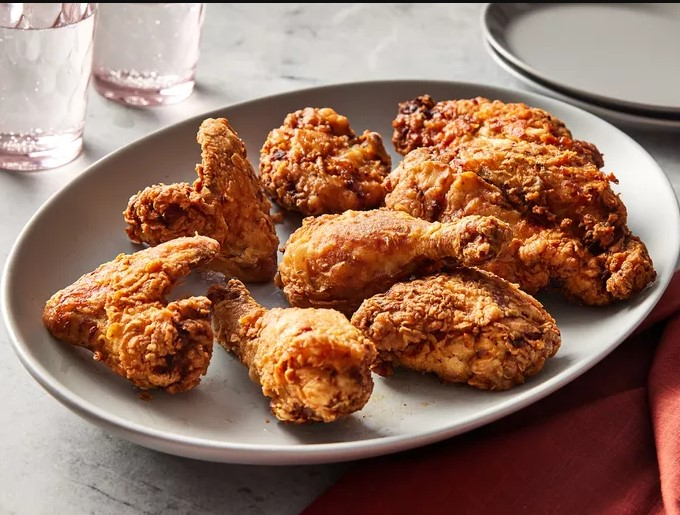

Back to Home

Chef John's Buttermilk Fried Chicken
Buttermilk fried chicken that's incredibly tender, thanks to tangy buttermilk. After the buttermilk soak, dredge the chicken pieces in seasoned flour and fry them in hot oil until crisp and golden.
Ingredients
These are the ingredients you will need to make this easy lasagna recipe:
- For the chicken: Whole chicken (cut into eight pieces), seasonings (black pepper, salt, paprika, white pepper, dried rosemary, ground thyme, dried oregano, dried sage, and cayenne pepper), and buttermilk
- For the seasoned flour: all-purpose flour, salt, paprika, cayenne pepper, garlic powder, white pepper, and onion powder
How to Make
You`ll find the full, step-by-step recipe below — but here`s a brief overview of what you can expect when you make homemade buttermilk fried chicken:
- Toss the chicken pieces in seasonings, then marinate in buttermilk overnight.
- Make the seasoned flour.
- Dredge each buttermilk-soaked chicken piece in flour and transfer to a plate.
- Fry the chicken until an instant read thermometer reads 165 degrees F.
- Drain on a cooling rack over a paper towel-lined baking sheet.